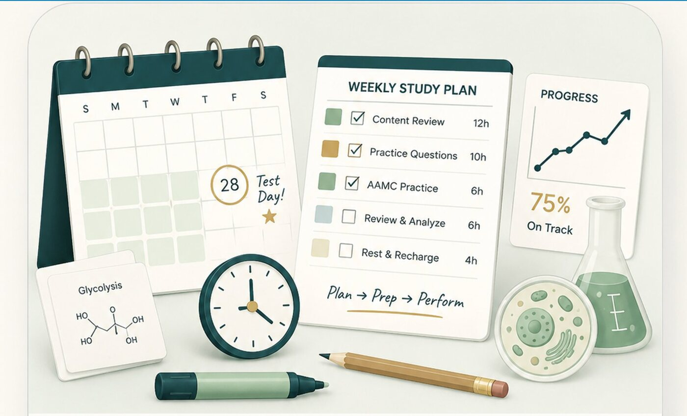

When I studied for the MCAT, the hardest part wasn’t the content. It was figuring out how to study it. I had to find my own path to a 99th-percentile score mostly through trial and error, and I always wished someone had handed me a clear plan. So here is the framework I now use with my own students.
Step 1: Start with a diagnostic and a target score
Before you plan anything, take a full-length practice test under realistic conditions. Your diagnostic tells you two things: a baseline score and a map of which sections are strongest and weakest. Pair that with a target score based on the schools you’re aiming for, and the gap between the two becomes your whole study plan.
Step 2: Work backward from your test date
Pick your test date first, then count the weeks between now and then. That number decides everything, how much content review you can fit, how many full-lengths you can take, and how aggressive your weekly schedule needs to be. Most students do best with somewhere between two and four focused months, but the right length depends entirely on your starting point and how many hours a week you can realistically commit.
Step 3: Move through three phases
A schedule that works almost always moves through the same arc:
- Content review: rebuild the foundations, prioritizing your weakest areas first. Don’t try to review everything equally; spend your time where the points are.
- Practice and application: shift toward question banks (UWorld is the standard) and passage practice, including dedicated CARS work. This is where content becomes points.
- Full-lengths and refinement: in the final stretch, the focus is timing, stamina, and turning each practice exam into a list of fixable patterns.
These phases overlap. You’ll keep practicing CARS the whole way through, but the center of gravity should shift from content toward full-lengths as test day approaches.
Step 4: Build a realistic weekly structure
Translate the phases into a repeatable week. Decide which days are content days, which are practice days, and where your weekly full-length will go (with a dedicated review day right after it). A predictable weekly rhythm removes the daily “what should I do today?” decision that quietly drains so much energy.
The mistake I see most: planning for the best possible version of yourself. A schedule that assumes you’ll study six flawless hours every single day will break the first time life happens, and then it’s easy to feel like you’ve failed. Plan for the real you instead.
Step 5: Schedule rest and flex days on purpose
This is the step most students skip, and it’s the one that saves plans. Build in at least one full day off each week, plus a few “catch-up” buffer days across your timeline that have nothing scheduled. When you get sick, have a rough week, or simply fall behind (and you will), those buffer days absorb the slip instead of toppling the entire schedule. Rest isn’t a reward for finishing; it’s part of how you retain what you study.
Step 6: Review every full-length like it’s the real lesson
The score on a practice test matters far less than what you do with it. Spend as much time reviewing a full-length as you spent taking it: why did you miss each question, was it content or careless or timing, and what pattern keeps showing up? That review is where the points actually come from.
The short version
Diagnose, set a target, work backward from your date, move from content to practice to full-lengths, build a weekly rhythm, protect rest and buffer days, and review relentlessly. Do that, and you’ll walk in organized and calm instead of frantic.
If mapping all of this onto your specific timeline feels overwhelming, that’s exactly what I help students do. You can see the MCAT packages here.